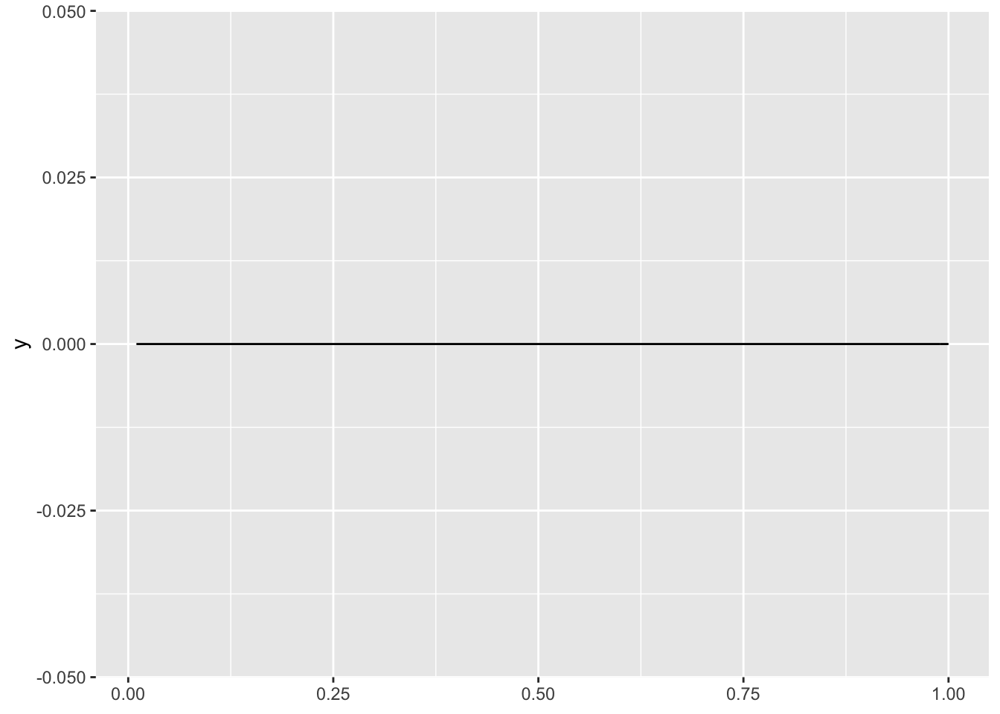

Chapter 5 Ways to Find a Confidence Interval
Invert a Hypothesis Test: find the collection of point hypotheses that cannot be rejected.
5.0.1 Bayesian Tests
Bayesian tests are quite straightforward. Because we have the posterior distribution, we can simply compute the posterior probability that the parameter lies in the region suggested by the null hypothesis. In other words, we can directly compute the probability that the null hypothesis is true by integrating the posterior over \(\Theta_0\) \(\Pr(\text{null is true} \mid x) = \Pr(\theta \in \Theta_0) \mid x) = \int_{\Theta_0} f(\theta \mid x) d\theta\).
Typically, we do not make a binary decision about whether or not to reject the null hypothesis in a Bayesian framework. Instead, we would simply report the probability that the alternative hypothesis were true as a degree of belief.
This presents a conceptual quandary for point null hypotheses: regardless of the data, the posterior probability that the null hypothesis is true will always be zero! Why? Because the area of the posterior distribution over that single point is a like a rectangle with zero width and therefore zero area.
With Bayesian tests, then, you need a composite null hypothesis such as \(H_0: \pi \leq \frac{1}{2}\).
If we use a \(\text{beta(1, 1)}\) (i.e., uniform) prior distribution, the the posterior distribution for the data above would be \(\text{beta(1 + 6, 1 + 4)}\).
We can use the cdf function in R to compute \(\Pr(\pi \geq 0) \approx 0.27\).
pbeta(0.5, shape1 = 7, shape2 = 5)## [1] 0.2744141So, for the uniform prior, you think there’s a 27% chance that the coin is not biased toward heads (i.e., biased toward tails).
A Bayesian test would reject the null hypothesis for some suitably small posterior probability \(\Pr(\text{null is true} \mid x)\).
5.0.1.1 Example: Exponential Distribution
A light bulb company claims that their bulb lasts 10 years on average. I (being a skeptical person) believe the average lifespan is probably shorter than this. I (being a patient person) check the lifespan of 10 of their bulbs, the 10 bulbs lasted 9, 5, 2, 15, 3, 25, 13, 39, 14, and 7 years (respectively).
I’ve heard that light bulb lifespans follow an exponential distribution, so I choose to model their lifespans as \(X \sim \text{exponential}(\lambda)\), where \(\lambda\) is the rate parameter (deaths per year).
The null hypothesis is \(H_0: \lambda <= \frac{1}{10}\) (i.e., the average lifespan is greater than or equal to 10 years). Remember that \(\lambda\) is a rate–which means “deaths per year”–so a lifespan of 10 years means a rate of \(\frac{1}{10}\) deaths per year.
Let’s start with the denominator of \(\lambda_{LR}\) and remember that \(\text{sup}_{\Theta} L(\theta) = L(\hat{\theta}^{ML})\).
From the previous chapter, we know that \(\hat{\lambda}^{ML} = \frac{1}{avg(x)}\), so \(\hat{\lambda}^{ML} = \frac{1}{13.2} \approx 0.076\).
Then we can use the dexp() function in R to find the likelihood of the data for \(\lambda =\hat{\lambda}^{ML}\).
# data
x <- c(9, 5, 2, 15, 3, 25, 13, 39, 14, 7)
# ml estimate (unrestricted)
lambda_hat <- 1/mean(x)
# overall likelihood; denominator
likelihoods <- dexp(x, rate = lambda_hat)
L <- prod(likelihoods)Now we need to do the numerator. It’s a bit harder, because we need to know the value of \(\lambda\) that’s consistent with the null hypothesis that maximizes the likelihood function.
Let’s start by plotting the likelihood function.
library(ggplot2)
ggplot() +
xlim(0.01, 1) +
geom_function(fun = ~ prod(dexp(x, rate = .x)))
# ml estimate (restricted to null hypothesis)
lambda_hat0 <- 1/10 # parameter is rate = 1/(avg. lifespan)
# overall likelihood; denominator
likelihoods0 <- dexp(x, rate = lambda_hat0)
L0 <- prod(likelihoods0)